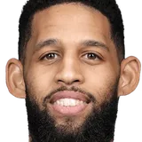

Al-Farouq Aminu
2010-11 to 2020-21 · Career Map
LA Clippers,  New Orleans,
New Orleans,  Dallas,
Dallas,  Portland,
Portland,  Orlando,
Orlando,  Chicago
Chicago
His best final NBA finish was #4 of 30, with the 2018-19 Portland Trail Blazers. In his 711 games for 6 teams over 11 seasons they went 336–375 (47.3%), −39 games under .500, with an average final finish of 17.1.
Jump to: Record by opponent · Season by season · Teammate help
Compare Al-Farouq Aminu with…
Suggested, same era and similar teammate help:

Final NBA finish, season by season
Title Finals Other playoffs Missed playoffs. #1 = champion; the dashed line is last place that season. Each point opens that season's final standings.
All 30 teams ranked in 2018-19, his best finish (#4)Teammate help
 Damian Lillard12.03 seasons
Damian Lillard12.03 seasons Blake Griffin1.81 season
Blake Griffin1.81 season Anthony Davis1.22 seasons
Anthony Davis1.22 seasons
Seasons with help 0.8 to 1.2 (3): best finish #11 of 30, 2014-15, worst #28 of 30, 2020-21.
Career
Career records (W–L, W − L, with and without) include 2026-27 games through Nov. 22, 2026; season counts and finishes are through 2025-26. Each card opens its board in the same scope. How we count.

Latest completed seasons
Season by season
Newest first; every header sorts. Final NBA finish is the team's rank among all teams that season (#1 = champion) and opens that season's standings. "Without him" uses the team-season window; the span line counts only the games between his first and last game for the team.
| 2020-21 | #28 of 30 | 21–51 29.2% | Missed playoffs | 17 of 72 | 5–12 29.4% | 10–18 35.7%span: 1–2, gap −3.9 | −6.3 | |
| 2020-21 | #21 of 30 | 31–41 43.1% | Missed playoffs | 6 of 72 | 0–6 0.0% | 12–11 52.2%span: 7–9, gap −43.8 | −52.2 | |
| 2019-20 | #16 of 30 | 33–40 45.2% | Lost 1st round 1–4 | 18 of 73 | 7–11 38.9% | 26–29 47.3%span: N/A, gap N/A | −8.4 | |
| 2018-19 | #4 of 30 | 53–29 64.6% | Lost conf finals 0–4 | 81 of 82 | 52–29 64.2% | 1–0 100.0%span: N/A, gap N/A | −35.8 | |
| 2017-18 | #9 of 30 | 49–33 59.8% | Lost 1st round 0–4 | 69 of 82 | 40–29 58.0% | 9–4 69.2%span: 9–4, gap −11.3 | −11.3 | |
| 2016-17 | #15 of 30 | 41–41 50.0% | Lost 1st round 0–4 | 61 of 82 | 33–28 54.1% | 8–13 38.1%span: 8–12, gap +14.1 | +16.0 | |
| 2015-16 | #8 of 30 | 44–38 53.7% | Lost conf semis 1–4 | 82 of 82 | 44–38 53.7% | N/A | N/A | |
| 2014-15 | #11 of 30 | 50–32 61.0% | Lost 1st round 1–4 | 74 of 82 | 45–29 60.8% | 5–3 62.5%span: 5–3, gap −1.7 | −1.7 | |
| 2013-14 | #21 of 30 | 34–48 41.5% | Missed playoffs | 80 of 82 | 33–47 41.2% | 1–1 50.0%span: 1–1, gap −8.8 | −8.8 | |
| 2012-13 | #26 of 30 | 27–55 32.9% | Missed playoffs | 76 of 82 | 25–51 32.9% | 2–4 33.3%span: 2–4, gap −0.4 | −0.4 | |
| 2011-12 | #27 of 30 | 21–45 31.8% | Missed playoffs | 66 of 66 | 21–45 31.8% | N/A | N/A | |
| 2010-11 | LA Clippers13th West | #23 of 30 | 32–50 39.0% | Missed playoffs | 81 of 82 | 31–50 38.3% | 1–0 100.0%span: 1–0, gap −61.7 | −61.7 |
On/off, starts and close games
From the lineup data, 1996-97 on. On/off is net points per 100 possessions with him on the floor minus off, a different unit from the win-rate gaps. Started and off the bench are team records in those games; close games are those within 5 points in the last 5 minutes with him on the floor.
| 2020-21 | −9.7 | 3–11 21.4% | 2–1 66.7% | 1–2 33.3% | |
| 2020-21 | +41.6 | N/A | 0–6 0.0% | N/A | |
| 2019-20 | −6.9 | 2–0 100.0% | 5–11 31.2% | 2–1 66.7% | |
| 2018-19 | +10.3 | 52–29 64.2% | N/A | 20–13 60.6% | |
| 2017-18 | +6.4 | 40–27 59.7% | 0–2 0.0% | 17–14 54.8% | |
| 2016-17 | +0.0 | 11–14 44.0% | 22–14 61.1% | 17–17 50.0% | |
| 2015-16 | +2.1 | 44–38 53.7% | N/A | 18–16 52.9% | |
| 2014-15 | +5.3 | 3–0 100.0% | 42–29 59.2% | 14–6 70.0% | |
| 2013-14 | −4.8 | 25–40 38.5% | 8–7 53.3% | 19–14 57.6% | |
| 2012-13 | +7.6 | 25–46 35.2% | 0–5 0.0% | 11–18 37.9% | |
| 2011-12 | +6.7 | 9–12 42.9% | 12–33 26.7% | 8–11 42.1% | |
| 2010-11 | LA Clippers | −4.8 | 4–10 28.6% | 27–40 40.3% | 4–7 36.4% |
Teammate help by season
Two separate numbers per season, each with every teammate that adds to it. Help this season = Teammates Score points for honors won that season by teammates who shared a game with him. Help coming in = the same teammates' honors from the season before. How help works.
- 2020-21
 Orlando
Orlando
 Nikola Vucevic All-Star117 g
Nikola Vucevic All-Star117 g
Help this season: 1 = 1 Nikola Vucevic
More: help coming in and other teammates
Help coming in (teammates' honors the season before): 0
Other teammates (no honors that season): Chuma Okeke 17 g, Dwayne Bacon 17 g, Khem Birch 16 g, Chasson Randle 15 g, Michael Carter-Williams 14 g, Evan Fournier 12 g, Gary Clark 11 g, Terrence Ross 10 g, Mo Bamba 10 g, James Ennis 8 g, Aaron Gordon 6 g, Karim Mane 1 g, Cole Anthony 1 g, Frank Mason 1 g
- 2020-21
 Chicago
Nikola Vucevic All-Star14 g
Chicago
Nikola Vucevic All-Star14 g Zach LaVine All-Star12 g
Zach LaVine All-Star12 g Patrick Williams All-Rookie 2nd0.1256 g
Patrick Williams All-Rookie 2nd0.1256 g
Help this season: 2.125 = 1 Nikola Vucevic + 1 Zach LaVine + 0.125 Patrick Williams
More: help coming in and other teammates
Help coming in (teammates' honors the season before): 0.125 = 0.125 Coby White
Other teammates (no honors that season): Tomas Satoransky 6 g, Garrett Temple 6 g, Thaddeus Young 6 g, Coby White 6 g, Denzel Valentine 6 g, Daniel Theis 5 g, Lauri Markkanen 5 g, Ryan Arcidiacono 5 g, Javonte Green 4 g, Devon Dotson 3 g, Adam Mokoka 2 g, Troy Brown 2 g, Cristiano Felicio 2 g
- 2019-20OrlandoHelp this season: 0, no honored teammate
More: help coming in
Help coming in (teammates' honors the season before): 1 = 1 Nikola Vucevic
- 2018-19
 Portland
Damian Lillard All-NBA 2ndAll-Star480 g
Portland
Damian Lillard All-NBA 2ndAll-Star480 g
Help this season: 4 = 4 Damian Lillard
More: help coming in and other teammates
Help coming in (teammates' honors the season before): 5 = 5 Damian Lillard
Other teammates (no honors that season): Zach Collins 76 g, Seth Curry 74 g, Evan Turner 73 g, Jusuf Nurkic 72 g, CJ McCollum 70 g, Jake Layman 70 g, Moe Harkless 60 g, Meyers Leonard 60 g, Nik Stauskas 44 g, Rodney Hood 27 g, Enes Kanter 23 g, Anfernee Simons 19 g, Caleb Swanigan 18 g, Wade Baldwin 16 g and 2 more
- 2017-18Portland
Damian Lillard All-NBA 1stAll-Star560 g
Help this season: 5 = 5 Damian Lillard
More: help coming in and other teammates
Help coming in (teammates' honors the season before): 0
Other teammates (no honors that season): Pat Connaughton 69 g, CJ McCollum 68 g, Jusuf Nurkic 66 g, Evan Turner 66 g, Ed Davis 65 g, Shabazz Napier 63 g, Zach Collins 62 g, Moe Harkless 46 g, Meyers Leonard 29 g, Jake Layman 27 g, Noah Vonleh 20 g, Caleb Swanigan 19 g, Wade Baldwin 7 g, Georgios Papagiannis 1 g
- 2016-17PortlandHelp this season: 0, no honored teammate
More: help coming in
Help coming in (teammates' honors the season before): 3.25 = 3 Damian Lillard + 0.25 CJ McCollum
- 2015-16Portland
Damian Lillard All-NBA 2nd375 g
 CJ McCollum MIP0.2580 g
CJ McCollum MIP0.2580 g
Help this season: 3.25 = 3 Damian Lillard + 0.25 CJ McCollum
More: help coming in and other teammates
Help coming in (teammates' honors the season before): 1 = 1 Damian Lillard
Other teammates (no honors that season): Mason Plumlee 82 g, Allen Crabbe 81 g, Ed Davis 81 g, Noah Vonleh 78 g, Moe Harkless 78 g, Gerald Henderson 72 g, Meyers Leonard 61 g, Tim Frazier 35 g, Pat Connaughton 34 g, Brian Roberts 21 g, Chris Kaman 16 g, Luis Montero 12 g, Cliff Alexander 8 g
- 2014-15
 Dallas
Dallas
 Dirk Nowitzki All-Star169 g
Dirk Nowitzki All-Star169 g
Help this season: 1 = 1 Dirk Nowitzki
More: help coming in and other teammates
Help coming in (teammates' honors the season before): 1 = 1 Dirk Nowitzki
Other teammates (no honors that season): Monta Ellis 72 g, Jose Juan Barea 69 g, Devin Harris 68 g, Tyson Chandler 68 g, Richard Jefferson 67 g, Chandler Parsons 58 g, Charlie Villanueva 57 g, Rajon Rondo 39 g, Greg Smith 36 g, Raymond Felton 27 g, Brandan Wright 26 g, Jae Crowder 24 g, Jameer Nelson 22 g, Dwight Powell 22 g and 3 more
- 2013-14
 New Orleans
Anthony Davis All-Star165 g
New Orleans
Anthony Davis All-Star165 g
Help this season: 1 = 1 Anthony Davis
More: help coming in and other teammates
Help coming in (teammates' honors the season before): 1.25 = 1 Jrue Holiday + 0.25 Anthony Davis
Other teammates (no honors that season): Anthony Morrow 75 g, Brian Roberts 70 g, Tyreke Evans 70 g, Austin Rivers 68 g, Eric Gordon 62 g, Jeff Withey 57 g, Alexis Ajinca 55 g, Greg Stiemsma 54 g, Darius Miller 44 g, Jrue Holiday 33 g, Jason Smith 30 g, Luke Babbitt 26 g, Ryan Anderson 21 g, Louis Amundson 17 g and 5 more
- 2012-13
 New Orleans
Anthony Davis All-Rookie 1st0.2559 g
New Orleans
Anthony Davis All-Rookie 1st0.2559 g
Help this season: 0.25 = 0.25 Anthony Davis
More: help coming in and other teammates
Help coming in (teammates' honors the season before): 0.25 = 0.25 Ryan Anderson
Other teammates (no honors that season): Robin Lopez 76 g, Ryan Anderson 75 g, Brian Roberts 72 g, Greivis Vasquez 72 g, Roger Mason 63 g, Austin Rivers 55 g, Lance Thomas 53 g, Darius Miller 49 g, Jason Smith 49 g, Xavier Henry 44 g, Eric Gordon 41 g, Louis Amundson 18 g, Terrel Harris 13 g, Dominic McGuire 4 g and 3 more
- 2011-12New OrleansHelp this season: 0, no honored teammate
- 2010-11LA Clippers
Blake Griffin All-StarROYAll-Rookie 1st1.7581 g
 Eric Bledsoe All-Rookie 2nd0.12580 g
Eric Bledsoe All-Rookie 2nd0.12580 g
Help this season: 1.875 = 1.75 Blake Griffin + 0.125 Eric Bledsoe
More: help coming in and other teammates
Help coming in (teammates' honors the season before): 1 = 1 Chris Kaman
Other teammates (no honors that season): DeAndre Jordan 79 g, Ryan Gomes 75 g, Randy Foye 62 g, Eric Gordon 55 g, Craig Smith 47 g, Baron Davis 42 g, Brian Cook 40 g, Rasual Butler 40 g, Ike Diogu 36 g, Chris Kaman 32 g, Maurice Williams 22 g, Jarron Collins 22 g, Willie Warren 19 g, Jamario Moon 19 g
Record against each opponent
- Best regular-season record against one franchise: 18–9 (66.7%) against the Sacramento Kings in 27 games.
- Toughest regular-season record against one franchise: 4–16 (20.0%) against the Toronto Raptors in 20 games.
- Most playoff series against one franchise: 3 against the Golden State Warriors, 0–3 in series and 1–12 in games.
Regular season, through 2025-26 (2026-27 games not included): 711 games, 336–375, against 30 franchises.
Grouped by franchise (named as today); game lists keep each team's name that season. Filters and the tab are kept in the URL, so a filtered view can be shared.
| Games list | |||||||
|---|---|---|---|---|---|---|---|
| 35 | 10–25 | 28.6% | −15 | N/A | 2010-11 to 2020-21 | ||
| 34 | 17–17 | 50.0% | 0 | N/A | 2010-11 to 2020-21 | ||
| 33 | 15–18 | 45.5% | −3 | 1–0 (4–3 in games) | 2010-11 to 2020-21 | ||
| 33 | 10–23 | 30.3% | −13 | 0–3 (1–12 in games) | 2010-11 to 2020-21 | ||
| 33 | 21–12 | 63.6% | +9 | N/A | 2010-11 to 2018-19 | ||
| 33 | 17–16 | 51.5% | +1 | N/A | 2010-11 to 2020-21 | ||
| 32 | 17–15 | 53.1% | +2 | N/A | 2010-11 to 2019-20 | ||
| 31 | 9–22 | 29.0% | −13 | N/A | 2010-11 to 2020-21 | ||
| 31 | 10–21 | 32.3% | −11 | 0–1 (1–4 in games) | 2010-11 to 2018-19 | ||
| 31 | 11–20 | 35.5% | −9 | 1–0 (4–1 in games) | 2010-11 to 2019-20 | ||
| 30 | 17–13 | 56.7% | +4 | N/A | 2010-11 to 2018-19 | ||
| 27 | 18–9 | 66.7% | +9 | N/A | 2010-11 to 2018-19 | ||
| 25 | 10–15 | 40.0% | −5 | 1–0 (4–2 in games) | 2011-12 to 2018-19 | ||
| 20 | 7–13 | 35.0% | −6 | N/A | 2010-11 to 2020-21 | ||
| 20 | 9–11 | 45.0% | −2 | N/A | 2010-11 to 2020-21 | ||
| 20 | 4–16 | 20.0% | −12 | N/A | 2010-11 to 2019-20 | ||
| 19 | 13–6 | 68.4% | +7 | N/A | 2010-11 to 2020-21 | ||
| 19 | 9–10 | 47.4% | −1 | N/A | 2010-11 to 2020-21 | ||
| 19 | 12–7 | 63.2% | +5 | 0–1 (0–4 in games) | 2010-11 to 2018-19 | ||
| 19 | 5–14 | 26.3% | −9 | N/A | 2010-11 to 2020-21 | ||
| 18 | 12–6 | 66.7% | +6 | N/A | 2010-11 to 2020-21 | ||
| 18 | 7–11 | 38.9% | −4 | N/A | 2010-11 to 2020-21 | ||
| 18 | 12–6 | 66.7% | +6 | N/A | 2010-11 to 2020-21 | ||
| 17 | 13–4 | 76.5% | +9 | N/A | 2010-11 to 2018-19 | ||
| 17 | 7–10 | 41.2% | −3 | N/A | 2010-11 to 2019-20 | ||
| 17 | 10–7 | 58.8% | +3 | N/A | 2010-11 to 2020-21 | ||
| 17 | 8–9 | 47.1% | −1 | N/A | 2010-11 to 2019-20 | ||
| 15 | 8–7 | 53.3% | +1 | N/A | 2010-11 to 2020-21 | ||
| 15 | 10–5 | 66.7% | +5 | N/A | 2010-11 to 2018-19 | ||
| 15 | 8–7 | 53.3% | +1 | N/A | 2010-11 to 2020-21 |
Rows add up to his career record in his games. A playoff series counts when he played in it; early round-robin games show as games only. How we count.
Playoffs, with and without him
| 2018-19 | Lost in the conference finals 0–4 to | #4 of 30 | 16 of 16 | 8–8 50.0% | |
| 2017-18 | Lost in the first round 0–4 to | #9 of 30 | 4 of 4 | 0–4 0.0% | |
| 2016-17 | Lost in the first round 0–4 to | #15 of 30 | 4 of 4 | 0–4 0.0% | |
| 2015-16 | Lost in the conference semifinals 1–4 to | #8 of 30 | 11 of 11 | 5–6 45.5% | |
| 2014-15 | Lost in the first round 1–4 to | #11 of 30 | 5 of 5 | 1–4 20.0% |
He played every playoff game for these teams, so there is no "without him" record.
Arrival and departure
Team wins per 82 games the season before he arrived vs his first season there, and his last season vs the season after he left. He leaves a team only when his next season with games is for another team (or he never plays again); whole seasons he missed and came back from are one "Missed" row with the team's record without him. Per 82 so short seasons compare fairly. These are team records, not a measure of what he did.
| Left | after 2020-21 | 2020-21: 21–51 23.9 per 82 | 2021-22: 22–60 22.0 per 82 without him | −1.9 wins | |
| Left | after 2020-21 | 2020-21: 31–41 35.3 per 82 | 2021-22: 46–36 46.0 per 82 without him | +10.7 wins | |
| Arrived | 2020-21 | 2019-20: 22–43 27.8 per 82 | 2020-21: 31–41 35.3 per 82 | +7.6 wins | |
| Arrived | 2019-20 | 2018-19: 42–40 42.0 per 82 | 2019-20: 33–40 37.1 per 82 | −4.9 wins | |
| Left | after 2018-19 | 2018-19: 53–29 53.0 per 82 | 2019-20: 35–39 38.8 per 82 without him | −14.2 wins | |
| Arrived | 2015-16 | 2014-15: 51–31 51.0 per 82 | 2015-16: 44–38 44.0 per 82 | −7.0 wins | |
| Left | after 2014-15 | 2014-15: 50–32 50.0 per 82 | 2015-16: 42–40 42.0 per 82 without him | −8.0 wins | |
| Arrived | 2014-15 | 2013-14: 49–33 49.0 per 82 | 2014-15: 50–32 50.0 per 82 | +1.0 wins | |
| Left | after 2013-14 | 2013-14: 34–48 34.0 per 82 | 2014-15: 45–37 45.0 per 82 without him | +11.0 wins | |
| Arrived | 2011-12 | 2010-11: 46–36 46.0 per 82 | 2011-12: 21–45 26.1 per 82 | −19.9 wins | |
| Left | LA Clippers | after 2010-11 | 2010-11: 32–50 32.0 per 82 | 2011-12: 40–26 49.7 per 82 without him | +17.7 wins |
| Debut | LA Clippers | 2010-11 | 2009-10: 29–53 29.0 per 82 | 2010-11: 32–50 32.0 per 82 | +3.0 wins |
Seasons split between teams
Each team's record before his first game for it, inside his window (games with and without him) and after his last game, in the seasons he played for two or more teams.
Best duos
Team record in regular-season games both played, top 10 by win %, at least 50 games together.
 Seth Curry
49–25 66.2%
Seth Curry
49–25 66.2% Zach Collins
88–50 63.8%
Zach Collins
88–50 63.8% Jose Juan Barea
44–25 63.8%
Jose Juan Barea
44–25 63.8% Tyson Chandler
43–25 63.2%
Tyson Chandler
43–25 63.2% Monta Ellis
45–27 62.5%
Monta Ellis
45–27 62.5% Jusuf Nurkic
97–59 62.2%
Jusuf Nurkic
97–59 62.2% Chandler Parsons
36–22 62.1%
Chandler Parsons
36–22 62.1% Richard Jefferson
41–26 61.2%
Richard Jefferson
41–26 61.2% Jake Layman
70–45 60.9%
Jake Layman
70–45 60.9%- Dirk Nowitzki
42–27 60.9%
With and without his teammates
His 12 teammates with the most regular-season games together. "Together" is the team's record in the games both played for it; "Without him" is the team's record in the games Al-Farouq Aminu played for that team while the teammate was on it (between the teammate's first and last game for the team, the appearance span) and the teammate did not play. Fewer than 20 games without him: no gap. Games through Nov. 22, 2026. How we count.
- CJ McCollumPortland 2015-16 to 2018-19
- Together
- 158–120 56.8%
- Without him
- 9–4 69.2%
- Gap
- Too few games without him
- Damian LillardPortland 2015-16 to 2018-19
- Together
- 156–114 57.8%
- Without him
- 12–10 54.5%
- Gap
- 3.2 points lower
 Moe HarklessPortland 2015-16 to 2018-19
Moe HarklessPortland 2015-16 to 2018-19- Together
- 134–106 55.8%
- Without him
- 31–13 70.5%
- Gap
- 14.6 points higher
 Meyers LeonardPortland 2015-16 to 2018-19
Meyers LeonardPortland 2015-16 to 2018-19- Together
- 111–92 54.7%
- Without him
- 48–27 64.0%
- Gap
- 9.3 points higher
 Evan TurnerPortland 2016-17 to 2018-19
Evan TurnerPortland 2016-17 to 2018-19- Together
- 113–73 60.8%
- Without him
- 12–13 48.0%
- Gap
- 12.8 points lower

- Together
- 93–79 54.1%
- Without him
- 7–9 43.8%
- Gap
- Too few games without him
 Eric GordonLA Clippers 2010-11;New Orleans 2011-12 to 2012-13; New Orleans 2013-14
Eric GordonLA Clippers 2010-11;New Orleans 2011-12 to 2012-13; New Orleans 2013-14- Together
- 70–97 41.9%
- Without him
- 28–68 29.2%
- Gap
- 12.7 points lower
 Brian RobertsNew Orleans 2012-13; New Orleans 2013-14; Portland 2015-16
Brian RobertsNew Orleans 2012-13; New Orleans 2013-14; Portland 2015-16- Together
- 62–101 38.0%
- Without him
- 13–8 61.9%
- Gap
- 23.9 points higher
- Jusuf NurkicPortland 2016-17 to 2018-19
- Together
- 97–59 62.2%
- Without him
- 2–2 50.0%
- Gap
- Too few games without him
- Noah VonlehPortland 2015-16 to 2017-18
- Together
- 80–73 52.3%
- Without him
- 13–11 54.2%
- Gap
- 1.9 points higher

Allen CrabbePortland 2015-16 to 2016-17- Together
- 74–66 52.9%
- Without him
- 1–0 100.0%
- Gap
- Too few games without him
- Zach CollinsPortland 2017-18 to 2018-19
- Together
- 88–50 63.8%
- Without him
- 3–8 27.3%
- Gap
- Too few games without him